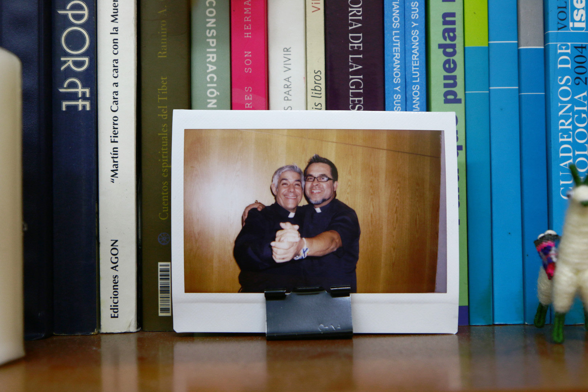
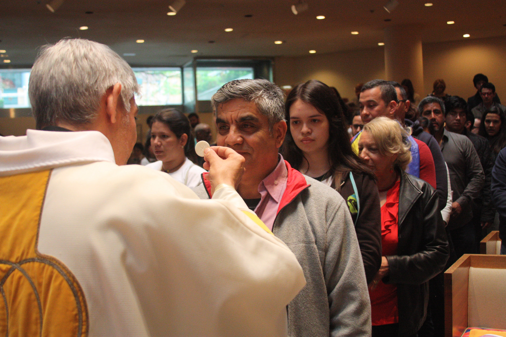
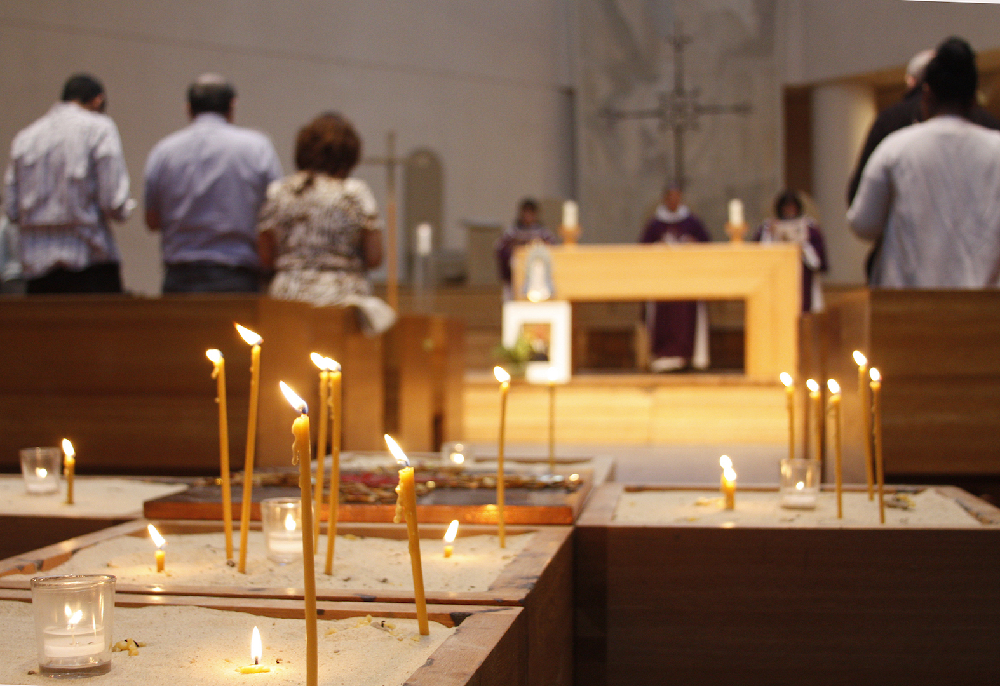
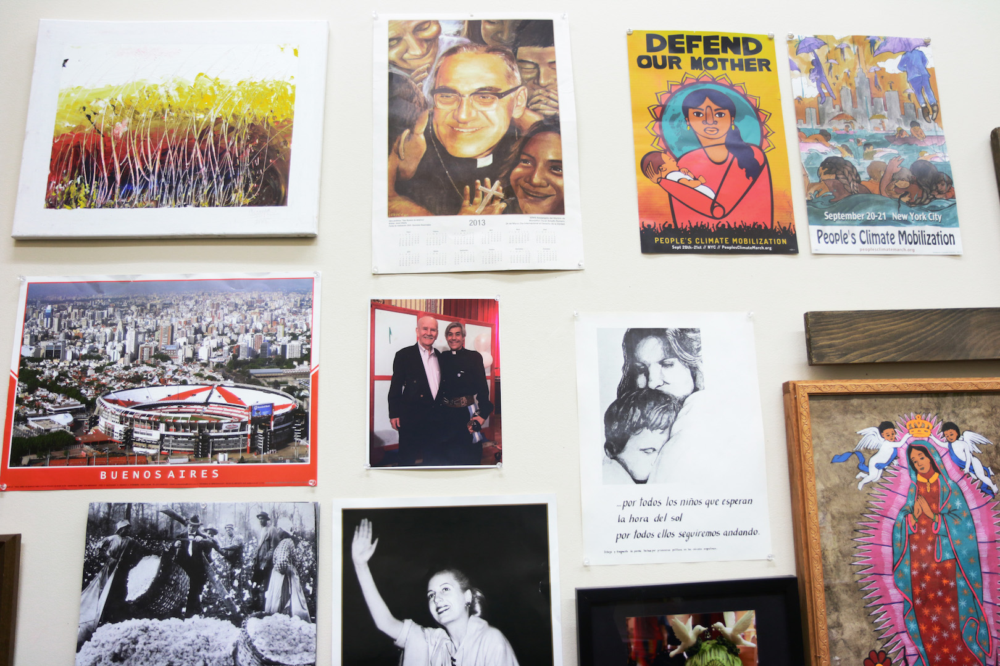
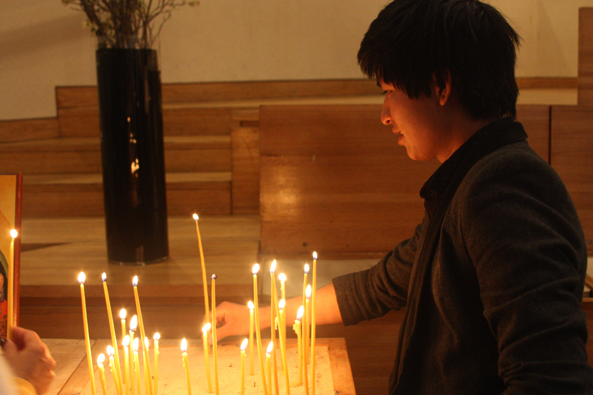

La resistencia del
Padre Fabián
Un sacerdote y su iglesia asumen la custodia legal de menores indocumentados para darles un estatus legal en Nueva York.
Hermes Espinoza recuerda el momento en que se vio solo en Nueva York con 17 años, sin familia y sin papeles para vivir legalmente en el país. Había cruzado la frontera un año antes, en 2007, procedente de México, para escapar de la discriminación por ser homosexual en su pueblo de Guerrero. Un día un amigo le refirió el nombre de un sacerdote en una iglesia en Midtown Manhattan, especialmente conocida por ser abierta a la comunidad LGBTQ. Era la Iglesia de Sión, la comunidad liderada por el padre Fabián Arias.
En medio de su desesperación por encontrar una manera de permanecer legalmente en Estados Unidos, comenzó a visitar la iglesia con frecuencia. Allí era el más joven en la misa, y pronto surgió una relación un tanto especial con la comunidad, y con el padre. Para retribuir el apoyo que encontró en el templo, Hermes les obsequió la primera virgen de Guadalupe. Así llegó el momento en que decidió jugar un último recurso: le pidió a Fabián que lo adoptara legalmente, como vía para obtener luego la residencia permanente. Y el padre aceptó al hijo.
Ninguno de los dos imaginó en ese momento, hace diez años, que nacía así su familia nueva. En los años siguientes, Fabián ha asumido la custodia legal de otros 27 hijos, e igualmente ha servido de enlace para que miembros de la iglesia también adopten.

Fabián, 53, no tenía hijos, pero con el pasar del tiempo se ha convertido en padre de muchos. Diez años después de que tomó la decisión de adoptar al primero, en abril pasado se reunió con Hermes y Octavio Godínez, 23, otro de los adoptados, un domingo después de la misa. “Adoptaría a los 11 millones de inmigrantes, a todos los que se pueda”, dijo al lado de dos de sus hijos.
El sacerdote argentino vive en Nueva York desde 2002, y es el líder de la congregación luterana que acoge a una comunidad de 300 inmigrantes que acuden a un servicio cristiano con una marcada influencia latinoamericana y prefieren la misa en español. El 80 por ciento de esa comunidad son inmigrantes indocumentados, asegura el padre. Allí encuentran el refugio que ofrece la iglesia, uno de los 12 templos que forman parte del Nuevo Movimiento de Iglesias Santuario (NMIS) en la ciudad.
El movimiento ha tomado fuerza desde 2007 en varias ciudades estadounidenses, hasta sumar 800 iglesias de todo el país. Las iglesias santuario forman una coalición que junto a otras organizaciones se resiste de diferentes maneras a dejar desamparados a los inmigrantes indocumentados en Estados Unidos.
Solo en 2016, se registraron 450,954 deportaciones realizadas por la patrulla de las fronteras y de los agentes de ICE, según el informe del año fiscal del departamento de Homeland Security. Estas son cifras que crecen año tras año hasta registrar casi cinco millones de deportaciones entre 2000 y 2015, sobre la base de acusaciones por cometer actos delictivos.
La política agresiva continua contra los inmigrantes se ha convertido en una tendencia en los últimos 16 años, desde el gobierno de George W. Bush y Barack Obama. Ahora la administración de Donald Trump mantiene un discurso que estereotipa y amenaza a la comunidad de inmigrantes que vive en este país.
¿Hasta dónde está dispuesta a llegar la comunidad de la Iglesia de Sión para ayudar a quienes viven cada día en peligro de deportación?
La lista del padre Fabián
Fabián no lo ha hecho solo. Pero Fabián, eso sí, es el hombre que echa a andar todo el mecanismo. La petición de Hermes, impulsó a Fabián hacia una nueva vocación de servicio a una comunidad con la que se sintió identificado desde que llegó a Nueva York: los inmigrantes latinoamericanos indocumentados en Estados Unidos.
Hermes fue desde el inicio, en varios sentidos, un sujeto especial. Su pasado resume varios de los traumas que a menudo delinean la vida de los inmigrantes: a los ocho años de edad uno de sus hermanos fue asesinado por su orientación sexual. Luego a los 16 decidió atravesar el desierto de Nogales para llegar a California. Al ser homosexual él también, huía del bullying, la discriminación, y de un eventual desenlace como el de su hermano.
La mano que tendió Fabián a Hermes fue también una consecuencia lógica de una serie de experiencias ocurridas luego de establecerse en la ciudad en el 2002, que transformaron su vida y su fe.
Tras haber tomado un año sabático, viajó para estudiar inglés en Estados Unidos desde su natal Buenos Aires como un cura católico. A los 17 años, Fabián había entrado al Seminario de la Iglesia Católica romana en Argentina. Allí fue discípulo del actual Papa Francisco.
Su paso a la iglesia luterana ocurrió en Nueva York, como resultado de una transformación de su pensamiento. Aquí comenzó a ver el luteranismo como una vertiente cristiana “más acorde con la realidad de la vida, que entiende que si dos personas se aman, puedan casarse aunque sean ambas del mismo sexo, o se hayan divorciado de parejas anteriores”, dice el sacerdote.
También en la ciudad vió de cerca la problemática de los inmigrantes por vez primera. “En ese momento empecé a relacionarme con la situación poco digna de los llamados indocumentados”, recuerda Fabián. Era la época de George Bush, cuando en New Jersey entraban a las fábricas a llevarse a toda la gente. Luego Obama deportó dos millones y medio de personas.
“Lo que vivimos ahora no se compara con lo de esa época”, dijo el padre, sobre las redadas migratorias que se realizaban en las fábricas de mayoría de trabajadores inmigrantes durante el gobierno de Bush, hijo. La “cacería de brujas” para frenar la inmigración tuvo un momento de auge cuando las deportaciones aumentaron abruptamente entre 1996 y 1997, según datos en el archivo histórico de Homeland Security. Para ser exactos, aumentó en un 39.1 por ciento entre un año y otro.
En ese momento, el Illegal Immigration Reform and Immigrant Responsibility Act de 1996 dio paso a las deportaciones masivas. La reforma migratoria conocida como IIRAIRA creó el marco legal para que agencias migratorias como ICE regresaran a todo inmigrante que se extendiera del tiempo permitido por su documentación legal, si la tenía.
Fabián tiene claro que la vulnerabilidad a que se exponen los llamados indocumentados no es nueva, aunque el discurso marcadamente anti-inmigrante de Donald Trump aparezca con más fuerza en los medios. “Se trata de un modelo político agresivo. Es un modelo antihumano, que no respeta derechos civiles”, dijo Fabián.
Crédito: Lidia Hernández Tapia.
Antes de liderar la iglesia de Sión, durante cinco años fue director del Nuevo Movimiento Santuario. El NMIS es continuador del antiguo movimiento santuario, que comenzara el pastor de Arizona John Fife, en 1980. En ese entonces, Fife se opuso a que su templo fuera intervenido por las autoridades, y acogió allí a migrantes que huían de la violencia en Centroamérica.
Hoy Fabián dirige una iglesia que protege a latinos en toda su diversidad y recibe a grupos minoritarios, como la comunidad LGBT. Es también quien ha efectuado una decena de casamientos de parejas homosexuales.
En el 2008, al asumir la custodia de Hermes, Fabián vio la oportunidad para dar el siguiente paso en su activismo. Tras asumir la tutela legal del primero, la noticia sobre las “adopciones” se corrió de boca en boca, y fueron llegando uno a uno, y a veces, de dos en dos. Después de Hermes, fue Darwin. Luego llegaron Gloria, Brian, Blanca, Juan Carlos, Octavio, Lucas, Michael, Allan, Yovanis, el hermano de Yovanis, Julián, Diego. La lista continúa.
La adopción demora generalmente entre tres y seis meses, desde el momento en que Fabián le presenta el caso a sus abogados. El equipo legal luego solicitan el título de tutela a los padres biológicos en sus países de origen (si están vivos). La corte evalúa los registros civiles y antecedentes penales de Fabián, las condiciones de su hogar y las personas con quienes viviría el menor y, finalmente, la orden emitida por un juez de la corte de familia para su aprobación. Después, el joven puede solicitar permiso de trabajo y, a los tres años, puede solicitar una residencia permanente.
La práctica funciona como una variante moderna del “underground railroad”, una red de rutas secretas establecidas en los Estados Unidos en el siglo XIX para que los esclavos afro-americanos escaparan a estados libres con ayuda de abolicionistas y aliados que simpatizan con la causa. Entonces Fabián y algunos fieles de la iglesia recurren a organizaciones sin fines de lucro como The Door, Cáritas y Legal Aid Society para comenzar el proceso de tutela. Los abogados de estas organizaciones ofrecen sus servicios de forma gratuita durante todo el proceso de adopción.
Los hijos continúan llegado a la iglesia de Sión, recomendados a veces por los ya adoptados. Ya sea que el joven llegue solo o alguien lo presenta ante Fabián, el padre evalúa el caso del menor con especialistas en leyes migratorias, para determinar si existen otras vías legales para regular su estatus migratorio, como DACA. Para aquellos que necesiten la tutela legal, según Fabián, existen algunos criterios con los que se debe cumplir para decidir si va a ser su próximo “hijo”.
“Primero, tienen que tener una presencia acá (en la iglesia), tienen que venir a las actividades, ser muy responsables con sus estudios, porque eso es parte fundamental para el futuro de ellos”, explicó Fabián, quien da seguimiento con maestros y directores para saber el rendimiento escolar de cada uno.
La cantidad de hijos se ha convertido en este punto en un obstáculo para seguir las adopciones, cuando en la corte insisten en cómo puede atender a tantos hijos. Así en 2015 Fabián decidió pedir ayuda a Olga Torres, 59, feligresa de la comunidad, para que asumiera la custodia legal de Octavio y Lucas Godínez. Y ella aceptó.
En ese momento, el sacerdote se encontraba fuera del país, en uno de sus frecuentes viajes a Argentina. Necesitaba con urgencia una persona de confianza que se hiciera responsable de los hermanos, ahora de de 23 y 18 años respectivamente. El menor, Lucas, había sido detenido por entrar al subway sin pagar, y tenía una orden de deportación, porque había sido detenido cuando cruzó la frontera. Probablemente lo habrían devuelto a México, de no haber sido adoptado.
“Fabián es todo un personaje. Es intenso”, dije Olga en una entrevista telefónica. “El que lo puede seguir, lo sigue. Pero no cuesta nada decirle que sí a Fabián, porque cuando vos más lo necesitas, él está ahí con vos. Eso no quiere decir que no nos peleemos muchísimo en política argentina, porque él es de un partido y yo soy de otro. Igual en el fútbol”.
Octavio y Lucas no conviven con Olga, como tampoco viven con Fabián los demás muchachos. Cada uno alquila un cuarto, y son totalmente independientes. Se reúnen a menudo los domingos en la iglesia.
Desde hace años, Olga coincidía con el padre en eventos de la comunidad argentina en Nueva York. Luego comenzó a ir a la iglesia de Sión. Como madre e inmigrante, ahora ciudadana americana, Olga dice que otros miembros de la iglesia pueden tener miedo de asumir la responsabilidad como guardián legal, pero ella lo haría otra vez, de ser preciso.
“Si escuchas las historias de ellos, no puedes dejar de hacerlo”, dijo. “Y no es nada complicado. Además, son chicos protectores, que te agarran para ayudarte a subir una escalera. Vienen de algunas familias que les pegaban o los maltrataban. Y lo único que quieren es tener sus documentos para dejar de ser perseguidos”.
“El significado de guardián tiene que ver, para mí, no solo con lo legal, sino con dar un acompañamiento, que no estén solos, que sientan que tienen una casa”, dijo Fabián al mostrar imágenes en su teléfono junto a algunos de sus hijos, recién salidos de la corte con los abogados.
Para Hermes, el padre Fabián llega a ocupar el rol de una verdadera figura paterna. Además de asumir la tutela legal de estos jóvenes, les brinda el apoyo que les falta tras haber dejado sus casas o vivir sin familia en Estados Unidos.
“Yo lo quiero como un padre. Tengo una persona que me escucha y comprende mi situación. Tengo amistades aquí, pero sí cuento con él y hablamos cuando podemos”, dijo Hermes.
Diego, el hijo más reciente
“¿Por qué lo quieren tanto los inmigrantes, Padre? ¿De nuevo usted por aquí?”, le preguntó la jueza de adopción hace unas semanas, cuando presentó la solicitud para adoptar a Diego, el último menor que se suma ahora a la lista.
El caso de Diego, la adopción más reciente, fue una de las más complicadas. Una mala interpretación de una trabajadora social enviada por la corte hizo difícil la comunicación con la jueza. Durante la investigación previa a la cita en la corte de Familia, la investigadora entendió por error que la forma en que había llegado Diego a Fabián era a través de la recomendación de un abogado. El malentendido causó que en febrero de este año la custodia del menor le fuera denegada. Luego apelaron, y finalmente dos meses después ganaron el caso.
Diego Ztuc, 20, llegó a Estados Unidos en 2012 procedente de Mazate, Guatemala. “Me fui de mi casa porque allá no le importo a nadie”, dijo.
Cruzó la frontera solo, con 15 años. Primero viajó a México, donde trabajó y reunió dinero para pagar los buses que cruzan los pueblos entre Sonora y Arizona. Al cruzar por Nogales, lo detuvo la policía fronteriza mexicana; y cuando vieron que no tenía a nadie más que le ayudara, lo dejaron seguir.
Luego vivió los últimos cuatro años entre Miami y Nueva York, donde una día coincidió con el padre Fabián, que repartía volantes promocionales en un parque. Durante el proceso legal para ser adoptado, vivió un tiempo en el Bronx en casa del sacerdote. Ahora el padre le ayuda a buscar una escuela para que aprenda a hablar inglés bien.
El padre sabe que su nombre aparece demasiado ya en los registros de adopción de la ciudad de Nueva York, y que en la Corte de familia los jueces lo reconocen. No olvida los escándalos de pederastia en que a menudo ha estado involucrada la Iglesia Católica. Sabe también que su iglesia está en una lista especial de los agentes de Immigration and Customs Enforcement (ICE). Que muchos se cuestionan de dónde sale el dinero para adoptar a tantos muchachos.
Por eso entiende que los jueces le hagan todo tipo de preguntas personales en la corte, antes de concederle una custodia.
La ley no establece una cifra límite de hijos que se puedan adoptar. No obstante, siempre que la persona demuestre que ha mantenido una actitud correcta con respecto a los menores que ya están bajo su custodia, legalmente no hay inconveniente para adoptar más hijos. Una ventaja que aprovecha Fabián es que ya varios de los adoptados alcanzaron la mayoría de edad, y en ese caso la ley ya no los ve como dependientes del guardián. Algunos ya tienen sus propios hijos y le dicen abuelo a Fabián.
El debate
Las agencias migratorias conocen sobre este servicio de “adopciones” y del apoyo legal que realizan algunas iglesias en Nueva York y en el estado de California. Y en cierto modo, lo apoyan.
“Nosotros (Homeland Security) queremos eso (tutela legal de menores indocumentados). Queremos que esos jóvenes sean estadounidenses. Queremos que crezcan en nuestra sociedad, prosperen y sean felices. Porque, cuando apoyas a un joven de otro país para que tenga una vida americana le estás dando oportunidad”, dijo un agente de ICE, que pidió no ser identificado.
Explicó que las iglesias son espacios de fe con los que ICE prefiere mantener cierta distancia, siempre que se mantengan en el marco legal y eviten que las personas bajo su protección no tengan deudas pendientes con las autoridades. “Siempre que mantengan a estos jóvenes fuera de gangas y de ser criminales, está bien”, dijo.
En contraste, entre las iglesias del Nuevo Movimiento Santuario, no todas conocen sobre el trabajo “adoptivo” que realizan Fabián y los fieles de Sión. Sin embargo, manifestaron su apoyo ante la iniciativa. En la iglesia de Santa Cruz, la congregación hispana de la Holyrood Episcopal Church en el alto Manhattan, el padre Luis Barrios, considera que la práctica es extrema, pero que la leyes la requieren.
Mientras tanto cuarenta cuadras más abajo en la isla de Manhattan, el padre Fabián saborea una jarra de mate, y reflexiona sobre la familia que ha creado. “Yo no sé si ha cambiado la vida de los chicos el hecho de que yo sea su guardián legal”, dice en su oficina en la iglesia. En las paredes cuelgan fotos de santos, resalta la imagen de la virgen de Guadalupe que llevó Hermes, y un retrato de Eva Perón. “Más que mi presencia, les ayuda tener ahora la posibilidad de poder tener un estatus, les permite ser alguien, poder acceder a cosas.”
La táctica para la resistencia tiene sus costos humanos, sociales y económicos, por lo que el propio Fabián entiende que no es una táctica sostenible. “No, ni hablar. Porque todos los jueces me plantean “Otro vez acá”, y no. Quisiera tener una tremenda casa con, por lo menos, 30 cuartos para que los chicos no tengan que estar pagando los 500 pesos y yendo al trabajo después de la escuela, y durmiendo seis horas...lejos de la gente, de sus afectos, en una sociedad que los esclaviza. Apostar a esto, no pero lo voy a seguir haciendo...estar al lado de ellos es importante, es darles un poco más de cielo, ¿no?”, dijo, entre los sorbos de mate.
Mientras la corte lo permita, la familia del padre Fabián dentro de la Iglesia de Sión seguirá creciendo.